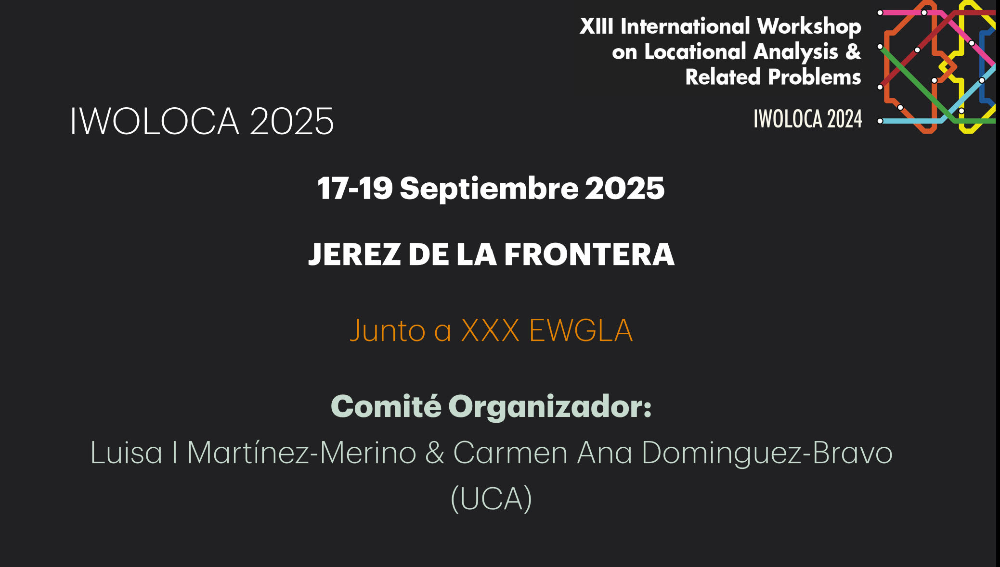

Closing IWOLOCA XIII and presentation of IWOLOCA XIV (jointly organized with the 30th EWGLA meeting)
The XXX Meeting of EURO Working Group on Locational Analysis will take place in Jerez de la Frontera (Spain) from 17 to 19 September 2025. This is a periodic meeting of EWGLA which gathers researchers focused on Locational Analysis and its applications. Theoretical contributions (concepts, methods, etc.), applied research, and presentations of software, are welcome. Communications, discussions or surveys on new applications, open problems, connections between the field of location theory and related areas are of interest.
